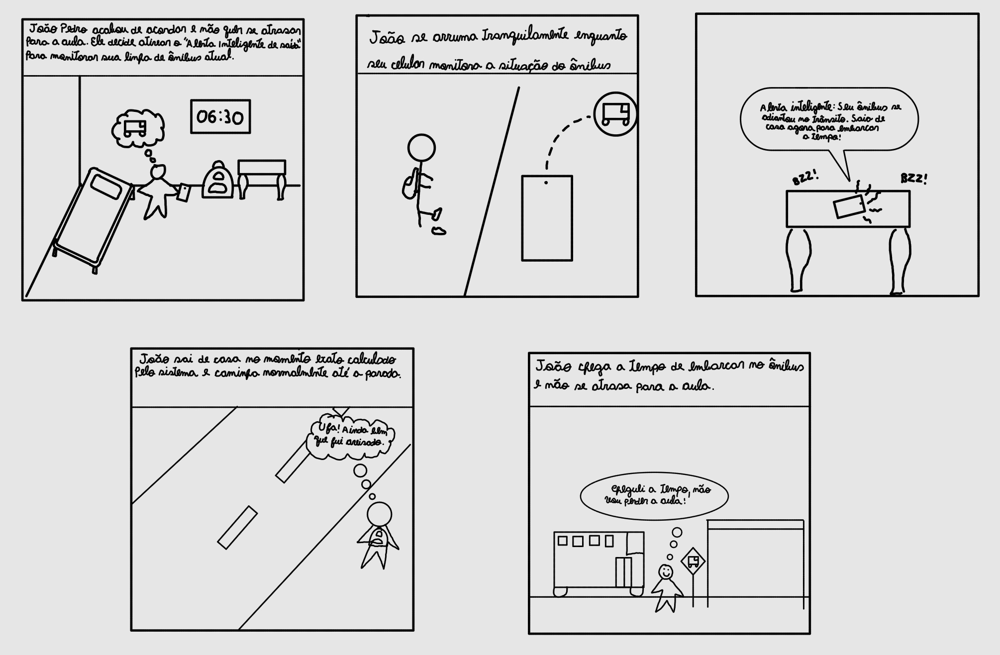
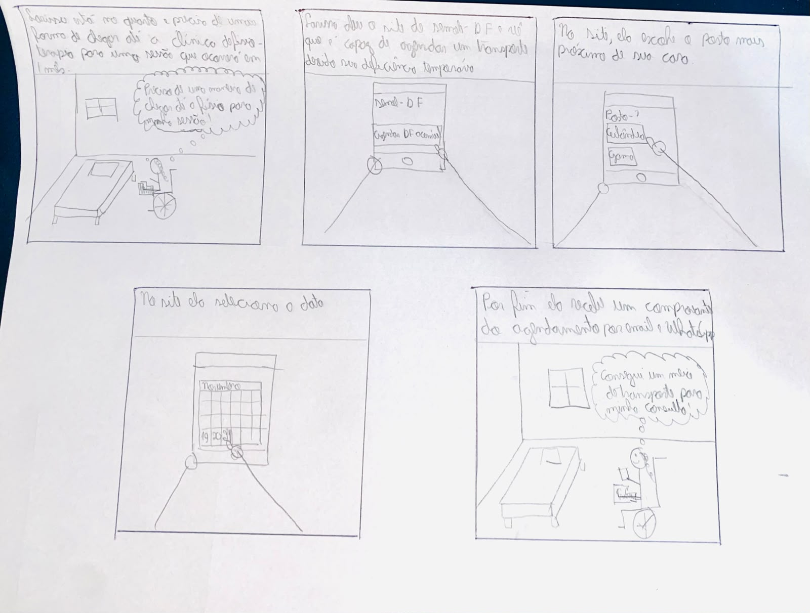
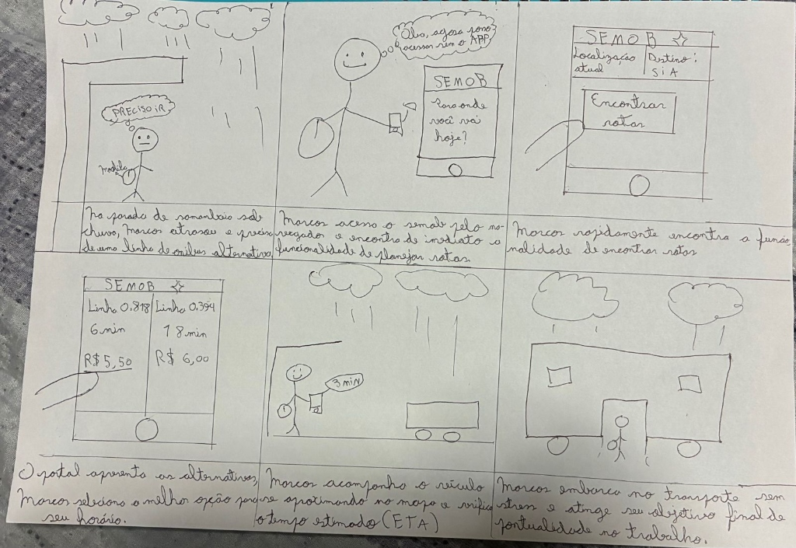
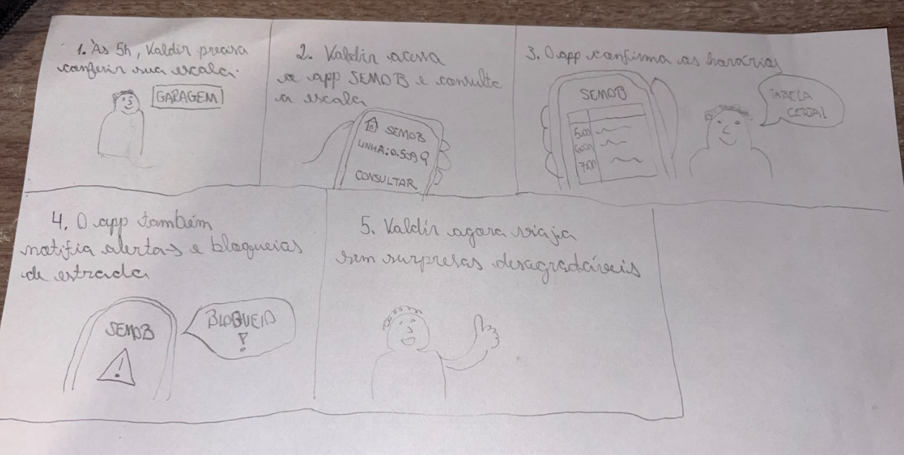
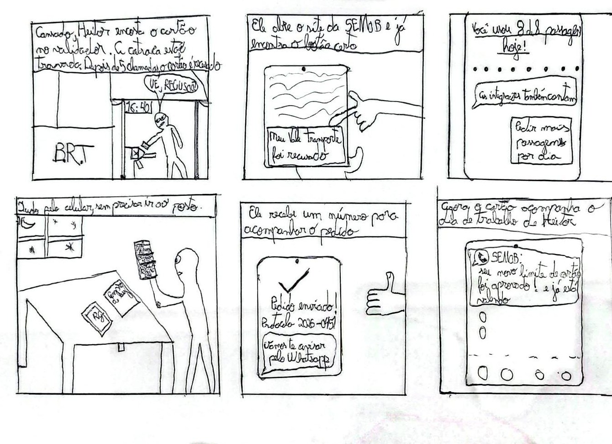
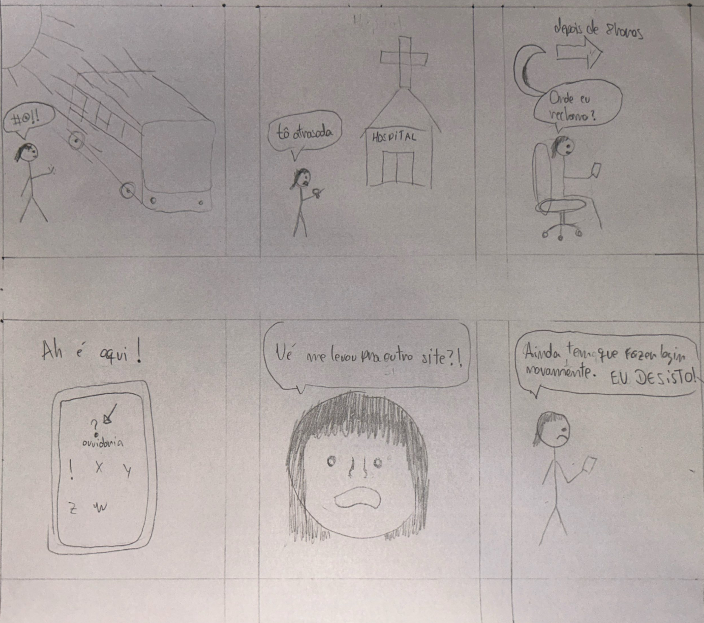
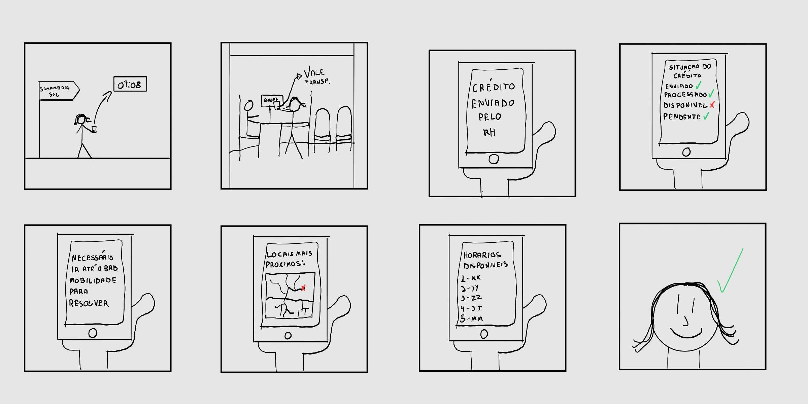
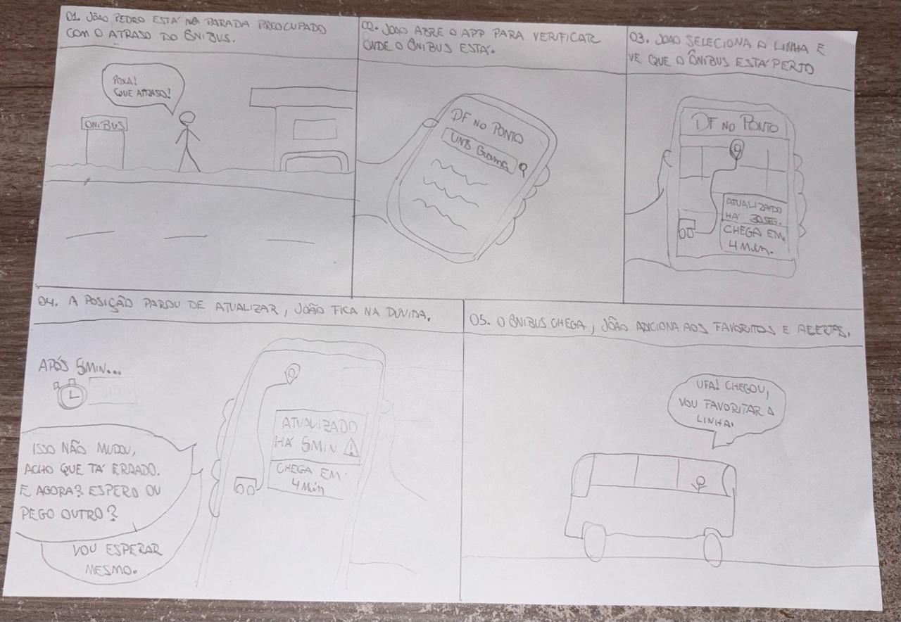

Histórico de Versão¶
| Data | Versão | Descrição | Autor(es) | Revisor(es) | Declaração do uso de IA |
|---|---|---|---|---|---|
| 11/10/2026 | 1.0 |
Criação e estruturação do documento de Storyboards e adição do Storyboard 01 (Alerta Inteligente de Saída). | Igor Dantas Araújo | Gabriel Cardone | Google Gemini - usado para formatação Markdown da página |
| 11/10/2026 | 1.1 |
Adição do Storyboard 02 (Pré-agendamento no Programa DF Acessível) e atualização do link do Cenário 1. | Gabriel Cardone | Igor Dantas Araújo | Google Gemini - usado para tratamento da imagem e formatação Markdown da seção |
| 12/10/2026 | 1.2 |
Adição do Storyboard 05 (Consulta de Rotas e Desvios para Novos Endereços): roteiro dos quadros, ilustração e tabela de verificação. | Tomás Rocho | Rodrigo Carvalho | Google Gemini - usado para formatação Markdown da seção |
| 13/10/2026 | 1.3 |
Adição do Storyboard 03 (Planejamento de Rota por Origem/Destino e Rastreamento), descrição narrativa acessível e tabela de conformidade. | Lucas Araújo | Arthur Mariani | Google Gemini - utilizado apenas para formatação em Markdown |
| 13/10/2026 | 1.4 |
Adição do Storyboard 04 (Consulta de Escala de Trabalho e Alertas Operacionais) elaborado por Carlos Costa. | Carlos Costa | Arthur Mariani | Não utilizada (elaboração autoral manual do integrante) |
| 23/10/2026 | 1.5 |
Reformulação do Storyboard 05 para a nova tarefa TAR-09 (Pedido de Aumento do Limite Diário do Vale-Transporte): nova ilustração, descrição narrativa dos quadros, tabela de verificação e vínculos na matriz. | Tomás Rocho | Rodrigo Carvalho | Claude (Anthropic) - usado para pesquisa no site da Semob e redação do roteiro e da seção |
| 27/10/2026 | 1.6 |
Adição do Storyboard 08 (Consulta do Ônibus em Tempo Real no DF no Ponto — TAR-06), que substitui o Storyboard 04 na avaliação da Etapa 5: linha na matriz de vínculos, descrição narrativa dos quadros e tabela de verificação. | Carlos Costa | Rodrigo Barbosa | Claude Code (Anthropic) - apenas revisou e formatou o texto em Markdown |
Storyboards da Equipe¶
Neste documento, apresentam-se os Storyboards desenvolvidos pelos integrantes do Grupo 05 para a Etapa 4 do projeto de Interação Humano-Computador (IHC) aplicado ao sistema de mobilidade da SEMOB-DF / BRB Mobilidade.
O storyboarding é uma técnica de prototipagem de baixa fidelidade e prototipação conceitual amplamente utilizada em IHC para ilustrar graficamente como uma solução de interface se insere no contexto de vida do usuário (Preece, Rogers & Sharp, 2005; Barbosa et al., 2021). Cada storyboard consiste em uma sequência de quadros em quadrinhos que retrata uma persona vivenciando uma situação real, reagindo a um gatilho de necessidade e utilizando o sistema para alcançar seus objetivos.
1. Introdução e Metodologia¶
Conforme o plano de ensino da disciplina, esta entrega exige a elaboração de 7 Storyboards individuais (exatamente 1 para cada integrante do grupo), garantindo o rastreamento direto entre a análise de necessidades e o reprojeto da solução de IHC.
Cada storyboard elaborado pela equipe atende aos seguintes requisitos metodológicos (Barbosa et al., 2021, Cap. 8):
-
Relação 1:1 com a Análise de Tarefas: Cada história desenhada é ancorada a uma tarefa específica modelada nas etapas de HTA e CTT.
-
Contextualização com Personas e Cenários: As narrativas utilizam as personas primárias e operacionais e os cenários de problema previamente validados pelo grupo.
-
Foco na Experiência Humana: Os quadrinhos priorizam o contexto físico, as motivações, as reações emocionais e o papel proativo da tecnologia, sem se prender a detalhes complexos de botões ou telas individuais.
2. Matriz de Vínculos: Storyboards ↔ Tarefas e Personas¶
A Tabela 1 sintetiza a distribuição dos 7 Storyboards do Grupo 05, indicando o autor responsável, a persona retratada, o cenário de problema e o link direto para a respectiva tarefa na Análise de Tarefas (HTA/CTT):
Tabela 1 — Matriz de Vínculos dos Storyboards da Equipe
| # | Autor | Título do Storyboard | Persona Associada | Cenário de Uso | Tarefa Vinculada (HTA / CTT) |
|---|---|---|---|---|---|
| 01 | Igor Dantas Araújo | Alerta inteligente de saída de casa | João Pedro Carvalho | Cenário 2 | TAR-01 (Alerta de Saída) |
| 02 | Gabriel Cardone | Pré-agendamento no Programa DF Acessível | Larissa Ferreira Lima | Cenário 1 | TAR-02 (DF Acessível) |
| 03 | Lucas Araújo | Planejamento de Rota por Origem/Destino | Marcos Paulo Vieira | Cenário 3 | TAR-03 (Origem/Destino) |
| 04 | Carlos Costa | Consulta de escala e alertas operacionais | Valdir Soares | Cenário 5 / Cenário 6 | TAR-04/TAR-05 (Motorista) |
| 05 | Tomas Garcia Rocho | Pedido de aumento do limite diário do Vale-Transporte | Heitor Santos Júnior | Cenário 9 | TAR-09 (Limite do Vale-Transporte) |
| 06 | Rodrigo Barbosa | Reclamação sobre ônibus a partir do site da Semob | Cláudia Regina Santos | Cenário 11 | TAR-08 (Reclamação sobre Ônibus) |
| 07 | Arthur Mariani | Regularização de crédito de Vale-Transporte | Maria Eduarda Santos | Cenário 4 | TAR-07 (Vale-Transporte) |
| 08 | Carlos Costa | Consulta do ônibus em tempo real no DF no Ponto | João Pedro Carvalho | Cenário 2 | TAR-06 |
Fonte: Igor Dantas araújo (2026).
Observação sobre o Storyboard 08: o motorista de ônibus necessário para avaliar o Storyboard 04 (TAR-04/TAR-05) não pôde ser recrutado. Para que a avaliação fosse feita com um participante do perfil correto, Carlos Costa elaborou o Storyboard 08, ancorado na TAR-06, que até então não tinha storyboard. O Storyboard 04 permanece neste documento como artefato da Etapa 4.
3. Storyboards Individuais¶
3.1. Storyboard 01: Alerta Inteligente de Saída de Casa¶
- Autor: Igor Dantas Araújo
- Persona Retratada: João Pedro Carvalho (Estudante da UnB Gama, 19 anos)
- Cenário de Uso: Cenário 2 — Atraso por Conflito de Horários no App
- Tarefa Ancorada: TAR-01 — Configurar e utilizar o alerta inteligente de saída de casa
- Tempo para confecção: ~10 minutos.
Ilustração do Storyboard 01¶

Figura 1 — Storyboard 01: Alerta inteligente de saída de casa
Fonte: Elaborado por Igor Dantas Araújo (2026).
Tabela de Verificação do Storyboard 01¶
Tabela 2 — Verificação de Conformidade do Storyboard 01
| Categoria / Critério | Atendimento no Storyboard 01 | Situação |
|---|---|---|
| 1. Personas e Atores | Apresenta o personagem João Pedro Carvalho em traço simples. | Conforme |
| 2. Contexto e Ambiente | Transita do ambiente doméstico (quarto) para a rua e o ponto de ônibus. | Conforme |
| 3. Tarefa Retratada | Ilustra a execução completa da TAR-01 (Alerta de Saída). | Conforme |
| 4. Papel do Sistema | Exibe a atuação proativa do alarme via monitoramento de GPS. | Conforme |
| 5. Estrutura Narrativa | Possui fluxo claro com Início (Q1), Meio (Q2–Q4) e Fim (Q5). | Conforme |
Fonte: Igor Dantas Araújo (2026).
3.2. Storyboard 02: Pré-agendamento no Programa DF Acessível¶
- Autor: Gabriel Cardone
- Persona Retratada: Larissa Ferreira Lima (Estudante e assistente administrativa, 23 anos, com deficiência temporária de mobilidade)
- Cenário de Uso: Cenário 1 — Pré-agendamento no Programa DF Acessível
- Tarefa Ancorada: TAR-02 — Pré-agendamento no Programa DF Acessível
- Tempo para confecção: ~9 minutos.
Ilustração do Storyboard 02¶

Figura 2 — Storyboard 02: Pré-agendamento no Programa DF Acessível
Fonte: Elaborado por Gabriel Cardone (2026).
Tabela de Verificação do Storyboard 02¶
Tabela 3 — Verificação de Conformidade do Storyboard 02
| Categoria / Critério | Atendimento no Storyboard 02 | Situação |
|---|---|---|
| 1. Personas e Atores | Apresenta a personagem Larissa Ferreira Lima em traço simples, usando cadeira de rodas. | Conforme |
| 2. Contexto e Ambiente | Situa a ação no quarto de Larissa, em casa, onde ela resolve o agendamento pelo celular. | Conforme |
| 3. Tarefa Retratada | Ilustra a execução completa da TAR-02 (acesso ao site, escolha do posto e escolha do dia). | Conforme |
| 4. Papel do Sistema | Exibe o atalho "Agendar DF Acessível", funcionalidade proposta para a página inicial do site da Semob-DF (que hoje não oferece o serviço), e o envio do comprovante por e-mail e WhatsApp. | Conforme |
| 5. Estrutura Narrativa | Possui fluxo claro com Início (Q1), Meio (Q2–Q4) e Fim (Q5). | Conforme |
Fonte: Gabriel Cardone (2026).
3.3. Storyboard 03: Planejamento de Rota por Origem e Destino com Monitoramento em Tempo Real¶
- Autor: Lucas Araújo
- Persona Retratada: Marcos Paulo Vieira (Assistente de logística e estoque, 31 anos, morador de Samambaia Sul)
- Cenário de Uso: Cenário 3 — Deslocamento com Busca por Destino
- Tarefa Ancorada: TAR-03 — Planejamento de Rota por Origem/Destino e Rastreamento
- Tempo para confecção: ~15 minutos.
Ilustração do Storyboard 03¶

Figura 3 — Storyboard 03: Planejamento de rota por Origem/Destino e rastreamento em tempo real
Fonte: Elaborado por Lucas Araújo (2026).
Descrição Narrativa dos Quadros (Acessibilidade e Rastreamento)¶
- Quadro 1 (Contexto e Problema): Na parada de ônibus de Samambaia Sul, sob chuva, Marcos percebe que sua linha habitual atrasou e precisa encontrar com urgência uma rota alternativa para não se atrasar no trabalho no SIA (evitando punição de ponto).
- Quadro 2 (Acesso ao Novo Portal): Marcos acessa o portal da SEMOB-DF pelo navegador do smartphone e encontra de imediato a funcionalidade de planejamento de rotas na página inicial, com a mensagem proativa: "Para onde você vai hoje?", comemorando o fato de poder resolver a demanda sem precisar baixar aplicativo sob a chuva.
- Quadro 3 (Definição dos Parâmetros): O sistema preenche automaticamente sua localização atual via GPS (Samambaia Sul) e, ao digitar "SIA", a ferramenta sugere instantaneamente o destino "SIA Trecho 3", permitindo acionar o botão "Encontrar rotas" (Subtarefas 1.1 e 1.2 da TAR-03).
- Quadro 4 (Comparação e Seleção de Itinerário): O portal exibe os cartões com as linhas disponíveis, tempo previsto e tarifa (ex.: Linha 0.818 - Semiexpressa em 6 min por R$ 5,50 vs. Linha 0.394 em 18 min por R$ 6,00). Marcos seleciona a melhor alternativa para sua necessidade de horário (Subtarefas 2.1 e 2.2 da TAR-03).
- Quadro 5 (Rastreamento Georreferenciado): Marcos visualiza o ônibus se aproximando no mapa em tempo real e confere o tempo estimado de chegada (ETA: 3 min), preparando seu cartão de embarque com tranquilidade e previsibilidade (Subtarefas 3.1 e 3.2 da TAR-03).
- Quadro 6 (Desfecho e Sucesso): O ônibus chega pontualmente à parada e Marcos realiza o embarque sem estresse, garantindo a chegada no trabalho no SIA com pontualidade e segurança.
Tabela de Verificação do Storyboard 03¶
Tabela 4 — Verificação de Conformidade do Storyboard 03
| Categoria / Critério | Atendimento no Storyboard 03 | Situação |
|---|---|---|
| 1. Personas e Atores | Apresenta a persona primária Marcos Paulo Vieira no ponto de ônibus com sua mochila. | Conforme |
| 2. Contexto e Ambiente | Retrata fielmente a parada de Samambaia Sul sob chuva, a urgência de horário e o uso do celular em pé. | Conforme |
| 3. Tarefa Retratada | Ilustra a execução completa da TAR-03 (informar origem/destino, selecionar linha, acompanhar no mapa e embarcar). | Conforme |
| 4. Papel do Sistema | Demonstra a busca direta sem exigência de código da linha, sem redirecionamento para app e mapa em tempo real. | Conforme |
| 5. Estrutura Narrativa | Apresenta sequência com início (Q1), meio e interação (Q2 a Q5) e desfecho bem-sucedido (Q6). | Conforme |
Fonte: Elaborado por Lucas Araújo (2026).
3.4. Storyboard 04: Consulta de Escala e Alertas Operacionais¶
- Autor: Carlos Costa
- Persona Retratada: Valdir Soares (Motorista Profissional de Ônibus Urbano, 48 anos)
- Cenário de Uso: Cenário 5 — Consulta de Escala de Trabalho e Cenário 6 — Alerta Emergencial de Desvio
- Tarefa Ancorada: TAR-04/TAR-05 — Análise de Tarefas do Motorista
- Tempo para confecção: ~10 minutos.
Ilustração do Storyboard 04¶

Figura 4 — Storyboard 04: Consulta de escala e alertas operacionais
Fonte: Elaborado por Carlos Costa (2026).
Descrição Narrativa dos Quadros do Storyboard 04¶
- Quadro 1 (Início — Contexto e Necessidade): Às 5h da manhã, na garagem da empresa concessionária antes de assumir o veículo, Valdir Soares precisa conferir sua escala de trabalho oficial do dia.
- Quadro 2 (Ação — Consulta no Aplicativo Móvel): Valdir pega seu smartphone, abre o aplicativo da SEMOB e digita a linha escalada (
0.509) no campo de consulta. - Quadro 3 (Feedback — Confirmação e Segurança Operacional): O aplicativo da SEMOB confirma a grade horária homologada (
5:00,6:00,7:00). Valdir comemora aliviado ao verificar que as informações estão sincronizadas com a garagem: "Tabela certa!". - Quadro 4 (Contingência — Notificação Proativa de Alertas e Bloqueios): Durante sua rotina, o aplicativo emite alertas operacionais em tempo real sobre bloqueios viários e contingências na estrada (
SEMOB: Bloqueio!). - Quadro 5 (Fim — Condução Segura e Desfecho Positivo): Munido de informações confiáveis e avisos tempestivos, Valdir segue sua viagem tranquilo, sem surpresas desagradáveis ou atritos operacionais, comemorando com um gesto positivo.
Tabela de Verificação do Storyboard 04¶
Tabela 5 — Verificação de Conformidade do Storyboard 04
| Categoria / Critério | Atendimento no Storyboard 04 | Situação |
|---|---|---|
| 1. Personas e Atores | Apresenta a persona Valdir Soares ("Seu Valdir"), motorista rodoviário de 48 anos, em traço simples e expressivo. | Conforme |
| 2. Contexto e Ambiente | Situa a narrativa na garagem nas primeiras horas da manhã (5h) e durante a condução no itinerário da linha. | Conforme |
| 3. Tarefa Retratada | Retrata a execução completa da consulta de escala homologada e recepção de alertas operacionais viários (TAR-04/TAR-05). | Conforme |
| 4. Papel do Sistema | Demonstra o aplicativo da SEMOB permitindo consulta da linha 0.509, exibindo grade de horários e alertando sobre bloqueios. | Conforme |
| 5. Estrutura Narrativa | Apresenta estrutura clássica com Início contextual (Q1), Ação e Feedback (Q2–Q4) e Desfecho positivo (Q5). | Conforme |
Fonte: Carlos Costa (2026).
3.5. Storyboard 05: Pedido de Aumento do Limite Diário do Vale-Transporte¶
- Autor: Tomas Garcia Rocho
- Persona Retratada: Heitor Santos Júnior (Técnico de manutenção predial, 36 anos, morador de Planaltina)
- Cenário de Uso: Cenário 9 — Cartão de Vale-Transporte Recusado no Meio do Expediente
- Tarefa Ancorada: TAR-09 — Solicitar Aumento do Limite Diário do Vale-Transporte
- Tempo para confecção: [a preencher pelo autor]
O Storyboard 05 retrata a solução proposta na TAR-09 para a situação do Cenário 9: o cartão de Heitor é recusado depois de vários embarques a serviço, e o site da Semob explica o motivo, recebe o pedido de mais acessos pelo celular e avisa quando o novo limite está valendo. As telas são representadas como esboços, preservando o caráter de planejamento do storyboard.
Ilustração do Storyboard 05¶

Figura 5 — Storyboard 05: Pedido de aumento do limite diário do Vale-Transporte
Fonte: Elaborado por Tomás Rocho (2026).
Descrição Narrativa dos Quadros do Storyboard 05¶
- Quadro 1 (Início — Cartão recusado): Às 16h40, numa estação de BRT, depois de cinco chamados em prédios diferentes, Heitor encosta o cartão no validador e a catraca continua travada. Ele não entende o motivo: "Ué, recusou?"
- Quadro 2 (Ação — Acesso direto no site): Heitor abre o site da Semob no celular e já encontra o botão certo: "Meu Vale-Transporte foi recusado", na página inicial (objetivos 1 e 2 da TAR-09).
- Quadro 3 (Feedback — Explicação da recusa): O site mostra "Você usou 8 de 8 passagens hoje!", com as oito passagens marcadas, avisa que as integrações também contam e oferece o botão "Pedir mais passagens por dia".
- Quadro 4 (Ação — Pedido pelo celular): À noite, em casa, Heitor fotografa com o celular o RG e o comprovante de residência sobre a mesa e envia o pedido guiado, sem precisar ir ao posto (objetivos 3 a 5 da TAR-09).
- Quadro 5 (Confirmação — Protocolo): O site confirma "Pedido enviado!" com o protocolo 2026-0451 e avisa: "Vamos te avisar pelo WhatsApp". Heitor faz um sinal de positivo.
- Quadro 6 (Fim — Novo limite valendo): Dias depois, chega no celular a mensagem de WhatsApp: "SEMOB: seu novo limite do cartão foi aprovado e já está valendo". Agora o cartão acompanha o dia de trabalho de Heitor (objetivo 6 da TAR-09).
Tabela de Verificação do Storyboard 05¶
Tabela 6 — Verificação de Conformidade do Storyboard 05
| Categoria / Critério | Atendimento no Storyboard 05 | Situação |
|---|---|---|
| 1. Personas e Atores | Apresenta a persona Heitor Santos Júnior em traço simples, desenhado à mão, no validador (Q1) e em casa (Q4). | Conforme |
| 2. Contexto e Ambiente | Transita da estação de BRT no fim do expediente (Q1–Q3) para a casa de Heitor à noite (Q4–Q5) e, dias depois, para a mensagem de aprovação no celular (Q6). | Conforme |
| 3. Tarefa Retratada | Ilustra a TAR-09 na versão proposta: entender a recusa, pedir mais acessos, enviar documentos, receber protocolo e ser avisado do novo limite. | Conforme |
| 4. Papel do Sistema | Exibe o acesso direto na página inicial (Q2), o contador de passagens do dia (Q3), o envio de documentos por foto (Q4), o protocolo (Q5) e o aviso de aprovação pelo WhatsApp (Q6). | Conforme |
| 5. Estrutura Narrativa | Possui fluxo claro com Início (Q1), Meio (Q2–Q5) e Fim com desfecho positivo (Q6). | Conforme |
Fonte: Tomás Rocho (2026).
3.6. Storyboard 06: Reclamação sobre Ônibus a partir do Site da Semob¶
- Autor: Rodrigo Barbosa
- Persona Retratada: Cláudia Regina Santos (Técnica de enfermagem, 46 anos, moradora de Ceilândia Norte)
- Cenário de Uso: Cenário 11 — Reclamação sobre Ônibus que Passou Direto
- Tarefa Ancorada: TAR-08 — Registro de Reclamação sobre Ônibus a partir do Site da Semob
- Tempo para confecção: ~10 minutos.
O Storyboard 06 retrata o fluxo atual da tarefa: Cláudia tenta reclamar de um ônibus que passou direto pela parada, mas encontra as barreiras identificadas na TAR-08 e desiste antes de registrar a reclamação. O desfecho evidencia o principal gargalo da tarefa: a mudança do site da Semob para o Participa-DF e a exigência de login, que fazem a usuária abandonar o objetivo. As telas são representadas como esboços, e não como capturas do site, preservando o caráter de planejamento do storyboard.
Ilustração do Storyboard 06¶

Figura 6 — Storyboard 06: Reclamação sobre ônibus a partir do site da Semob
Fonte: Elaborado por Rodrigo Barbosa (2026).
Descrição Narrativa dos Quadros do Storyboard 06¶
- Quadro 1 (Início — O Ocorrido): De madrugada, na parada de ônibus, Cláudia perde o ônibus da sua linha, que passa direto sem parar.
- Quadro 2 (Consequência — Atraso no Plantão): Por causa do ônibus perdido, Cláudia chega atrasada ao trabalho no hospital e decide que vai reclamar.
- Quadro 3 (Ação — Procura do Canal): Mais tarde, já em casa, Cláudia abre o site da Semob no celular para descobrir onde pode registrar sua reclamação.
- Quadro 4 (Descoberta — Ouvidoria): Depois de procurar pelo site, Cláudia encontra o símbolo da Ouvidoria no celular e toca nele.
- Quadro 5 (Ruptura — Mudança de Site): Cláudia é levada para outro site, o Participa-DF, e se pergunta por que saiu do site da Semob.
- Quadro 6 (Fim — Desistência): O novo site exige que ela faça login novamente. Cláudia reclama do esforço extra e desiste de registrar a reclamação.
Tabela de Verificação do Storyboard 06¶
Tabela 7 — Verificação de Conformidade do Storyboard 06
| Categoria / Critério | Atendimento no Storyboard 06 | Situação |
|---|---|---|
| 1. Personas e Atores | Apresenta a persona Cláudia Regina Santos, técnica de enfermagem de 46 anos, em traço simples. | Conforme |
| 2. Contexto e Ambiente | Transita da parada de ônibus, de madrugada, para o hospital e, depois, para a casa de Cláudia, onde ela tenta reclamar pelo celular. | Conforme |
| 3. Tarefa Retratada | Retrata a tentativa de execução da TAR-08 até o ponto de abandono: encontrar o canal no site da Semob (objetivo 2) e acessar o Participa-DF (objetivo 3). | Conforme |
| 4. Papel do Sistema | Mostra o site da Semob, o acesso pela Ouvidoria, o redirecionamento ao Participa-DF e a exigência de login como barreiras à tarefa. | Conforme |
| 5. Estrutura Narrativa | Possui fluxo claro com Início (Q1–Q2), Meio (Q3–Q5) e Fim com desfecho negativo (Q6). | Conforme |
Fonte: Rodrigo Barbosa (2026).
3.7. Storyboard 07: Regularização de Crédito de Vale-Transporte¶
- Autor: Arthur Mariani
- Persona Retratada: Maria Eduarda Santos
- Cenário de Uso: Cenário 4 — Resolução de Falha de Crédito de Vale-Transporte
- Tarefa Ancorada: TAR-07 — Consulta e Regularização de Crédito
- Tempo para confecção: ~9 minutos.
Ilustração do Storyboard 07¶

Figura 7 — Storyboard 07: Regularização de Crédito de Vale-Transporte
Fonte: Elaborado por Arthur Mariani (2026).
Tabela de Verificação do Storyboard 07¶
Tabela 8 — Verificação de Conformidade do Storyboard 07
| Categoria / Critério | Atendimento no Storyboard 07 | Situação |
|---|---|---|
| 1. Personas e Atores | Apresenta a personagem Maria Eduarda Santos em traço simples durante a busca pela regularização do Vale-Transporte. | Conforme |
| 2. Contexto e Ambiente | Situa a ação em Samambaia Sul, às 07h08, durante o deslocamento da personagem e a tentativa de utilizar o Vale-Transporte no ônibus. | Conforme |
| 3. Tarefa Retratada | Representa a TAR-07, desde a identificação do crédito indisponível até a compreensão da situação, do responsável e do próximo passo necessário. | Conforme |
| 4. Papel do Sistema | Exibe informações sobre o estado do crédito, o encaminhamento ao BRB Mobilidade, os locais mais próximos e os horários disponíveis. | Conforme |
| 5. Estrutura Narrativa | Possui fluxo claro com início (Q1–Q2), desenvolvimento da orientação (Q3–Q7) e desfecho positivo (Q8). | Conforme |
Fonte: Arthur Mariani (2026).
3.8. Storyboard 08: Consulta do Ônibus em Tempo Real no DF no Ponto¶
- Autor: Carlos Costa
- Persona Retratada: João Pedro Carvalho (estudante de Engenharia na UnB Gama, 19 anos)
- Cenário de Uso: Cenário 2 — Viagem matutina
- Tarefa Ancorada: TAR-06 — Consulta de ônibus em tempo real no DF no Ponto
- Tempo para confecção: ~14 minutos.
- Diferença em relação ao Storyboard 01: o Storyboard 01 trata do alerta que avisa o João Pedro a hora de sair de casa (TAR-01). O Storyboard 08 trata do que acontece já no ponto: consultar a previsão, avaliar se ela é confiável e decidir o que fazer.
Ilustração do Storyboard 08¶

Figura 8 — Storyboard 08: Consulta do ônibus em tempo real no DF no Ponto
Fonte: Elaborado por Carlos Costa (2026).
Descrição Narrativa dos Quadros do Storyboard 08¶
Tabela 9 — Quadros do Storyboard 08 e sua relação com a HTA da TAR-06
| Quadro | Momento | Descrição | Objetivo da HTA (TAR-06) |
|---|---|---|---|
| 1 | Início — contexto e necessidade | João Pedro está na parada, preocupado com o atraso do ônibus ("Poxa! Que atraso!"). | 0 (input: necessidade de saber quando o ônibus chega) |
| 2 | Ação — busca no aplicativo | Ele abre o DF no Ponto para ver onde o ônibus está e busca o ponto de referência "UnB Gama", que retorna uma lista de resultados. | 1 (abrir o aplicativo) e 2.1 (buscar a linha ou o ponto) |
| 3 | Feedback — previsão e posição | Ele seleciona a linha e vê que o ônibus está perto: o mapa mostra a posição do ônibus, a indicação "Atualizado há 30 seg." e a previsão "Chega em 4 min". | 2.2 (selecionar a linha), 3.1 (obter previsão e posição) e 3.2 (avaliar se a informação é confiável) |
| 4 | Contingência — informação defasada | Após 5 minutos, a tela mostra "Atualizado há 5 min" com um sinal de alerta, e a previsão continua "Chega em 4 min". João Pedro desconfia ("Isso não mudou, acho que tá errado. E agora? Espero ou pego outro?") e decide esperar. | 3.2 (avaliar a confiabilidade) e 4 (decidir o que fazer: considera 4.3 e escolhe 4.2) |
| 5 | Desfecho — próximas consultas | O ônibus chega ("Ufa! Chegou, vou favoritar a linha."), e João Pedro adiciona a linha aos favoritos e ativa os alertas. | 5 (facilitar as próximas consultas: 5.1 + 5.2) |
Fonte: Carlos Costa (2026), com base na HTA da TAR-06 de Rodrigo Barbosa (2026).
Tabela de Verificação do Storyboard 08¶
Tabela 10 — Verificação de Conformidade do Storyboard 08
| Categoria / Critério | Atendimento no Storyboard 08 | Situação |
|---|---|---|
| 1. Personas e Atores | Apresenta a persona João Pedro Carvalho, estudante universitário que depende do ônibus para chegar à primeira aula. | Conforme |
| 2. Contexto e Ambiente | Situa a narrativa no ponto de ônibus, de manhã, antes da aula na UnB Gama, como no Cenário 2. | Conforme |
| 3. Tarefa Retratada | Retrata a TAR-06 do início ao fim: busca da linha, leitura da previsão, avaliação da confiabilidade, decisão e favoritar a linha. | Conforme |
| 4. Papel do Sistema | Mostra o DF no Ponto exibindo previsão, posição no mapa e hora da última atualização, e oferecendo favoritos e aviso de atraso. | Conforme |
| 5. Estrutura Narrativa | Segue início (Q1), ação e feedback (Q2–Q3), contingência (Q4) e desfecho positivo (Q5), com legenda numerada em cada quadro. | Conforme |
Fonte: Carlos Costa (2026).
4. Referências Bibliográficas¶
- BARBOSA, Simone Diniz Junqueira; SILVA, Bruno Santana da; SILVEIRA, Milene Selbach; GASPARINI, Isabela; DARIN, Ticianne; BARBOSA, Gabriel Diniz Junqueira. Interação Humano-Computador e Experiência do Usuário. Rio de Janeiro: Autopublicação, 2021. ISBN 978-65-00-19677-1. (Capítulo 8: Organização do Espaço de Problema — Storyboards e Cenários, p. 158–162).
- PREECE, Jennifer; ROGERS, Yvonne; SHARP, Helen. Design de Interação: Além da interação homem-computador. São Paulo: Editora Érica, 2005. (Capítulo 8: Design, Prototipação e Construção).
- SALES, André Barros de. Plano de Ensino: Interação Humano Computador. Brasília: Universidade de Brasília, Faculdade UnB Gama (FCTE/UnB), 2026. ```